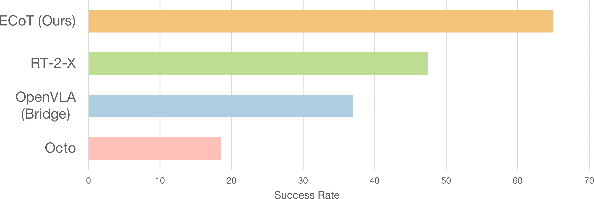
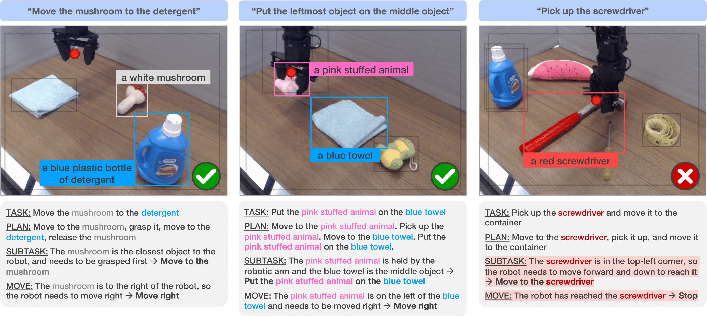
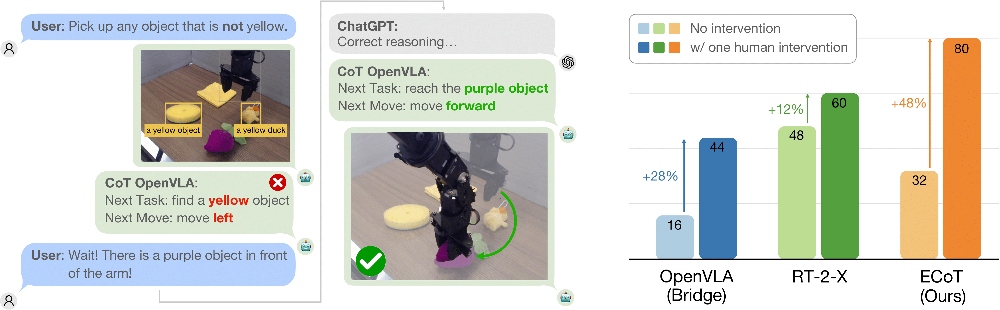

A key limitation of learned robot control policies is their inability to generalize outside their training data. Recent works on vision-language-action models (VLAs) have shown that the use of large, internet pre-trained vision-language models as the backbone of learned robot policies can substantially improve their robustness and generalization ability. Yet, one of the most exciting capabilities of large vision-language models in other domains is their ability to reason iteratively through complex problems. Can that same capability be brought into robotics to allow policies to improve performance by reasoning about a given task before acting? Naive use of "chain-of-thought" (CoT) style prompting is significantly less effective with standard VLAs because of the relatively simple training examples that are available to them. Additionally, purely semantic reasoning about sub-tasks, as is common in regular CoT, is insufficient for robot policies that need to ground their reasoning in sensory observations and the robot state. To this end, we introduce Embodied Chain-of-Thought Reasoning (ECoT) for VLAs, in which we train VLAs to perform multiple steps of reasoning about plans, sub-tasks, motions, and visually grounded features like object bounding boxes and end effector positions, before predicting the robot action. We design a scalable pipeline for generating synthetic training data for ECoT on large robot datasets. We demonstrate, that ECoT increases the absolute success rate of OpenVLA, the current strongest open-source VLA policy, by 28% across challenging generalization tasks, without any additional robot training data. Additionally, ECoT makes it easier for humans to interpret a policy's failures and correct its behavior using natural language.
Schematic illustrating the reasoning steps produced by our embodied chain-of-thought policy. Pink boxes represent embodied reasoning steps.
We train a vision-language-action policy (VLA) to autoregressively generate textual reasoning (the "embodied chain of thought," or ECoT) in response to commands and observations before it chooses a robot action. Such reasoning contains high-level reasoning steps (task, plan, and sub-task) to encourage the model to "think carefully" and low-level features (movement, gripper position, and labeled object bounding boxes) to get the model to "look carefully."
We provide a Colab notebook that showcases our model generating an example reasoning chain for the task "place the watermelon on the towel." This can be run using Colab's provided free T4 GPU.
Additionally, we also provide instructions for converting, compiling, and running inference with our ECoT VLA using TensorRT-LLM. This enables drastic inference time speedups with minimal changes to policy performance.
Our ECoT policy is built atop OpenVLA, which fine-tunes a Prismatic VLMs to take in images and instructions to output actions.
We use various foundation models as submodules for our embodied chain-of-thought data generation pipeline.
To train our policies to perform embodied chain-of-thought reasoning, we create a synthetic data generation pipeline that leverages numerous foundation models to extract features from robot demonstrations to put into corresponding textual reasoning chains. We use this pipeline on the Bridge V2 robot demonstration dataset to produce the embodied chain-of-thought data for training our policy.
"Put the mushroom in the metal pot"
"Put the carrot on the plate"
"Put the rightmost object on the middle object"
"Put the mushroom in the rightmost container"
"Place the watermelon on the towel"
"Move the mushroom the the measuring tape"
"Put the edible object in the bowl"
"Put the object used for drinking on the towel"
We construct a suite of 14 evaluation tasks to test how well ECoT deals with novel objects, instructions, and spatial relations. We compare our policy against several baselines: Octo, OpenVLA, and RT-2-X.
Evaluation success rates of our ECoT policy compared against several popular generalist robot policies.
After running over 300 real-world evaluation trials per policy, we find that our embodied chain-of-thought policy yields the best performance, especially on tasks that require spatial understanding and semantic generalization.
Some example ECoT generations. Left and middle are from successful trajectories, while right is from a failed one.
We also find that the generated reasonings can give qualitative interpretability insights into why the policy succeeds or fails at a given task, such as correctly rephrasing a vague task to a concrete one or misidentifying relevant scene objects.
Embodied chain-of-thought reasoning opens a new approach for human-robot interaction: human operators can interpret and debug the robot's "thought process" by issuing natural language hints or corrections, which a large language model (like ChatGPT) can format into an ECoT reasoning text. The ECoT policy can then condition on this fixed reasoning to pick actions.
Embodied chain-of-thought reasoning enables policies to accept natural language corrections and hints.
Using such interventions, our policy is able to solve tasks it previously failed on. This improvement boosts our policy's performance on difficult tasks beyond that of OpenVLA and RT-2-X, both with or without modified instruction prompts.
Example of our policy generating reasoning for novel robot embodiments.
Finally, we find that fine-tuning an OpenVLA policy on our ECoT Bridge V2 data allows it to generalize its reasoning capabilities to other robot as well -- despite not seeing any reasoning annotations for these other embodiments! We observe that the policy can even produce highly robot-dependent embodied features, such as the gripper position.
@article{Zawalski24-ecot,
title={Robotic Control via Embodied Chain-of-Thought Reasoning},
author={Zawalski, Micha\l{} and Chen, William and Pertsch, Karl and Mees, Oier
and Finn, Chelsea and Levine, Sergey},
year={2024}
}